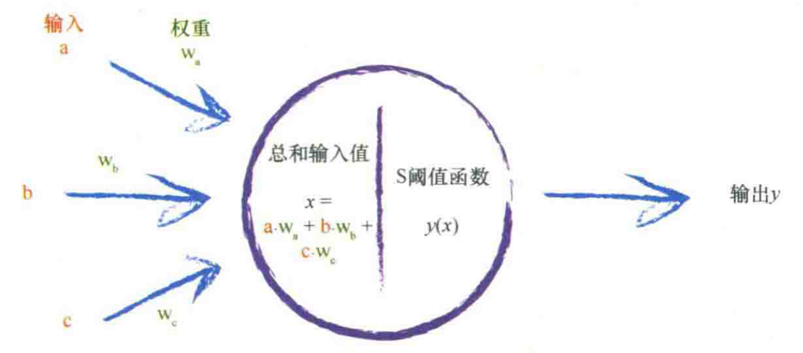
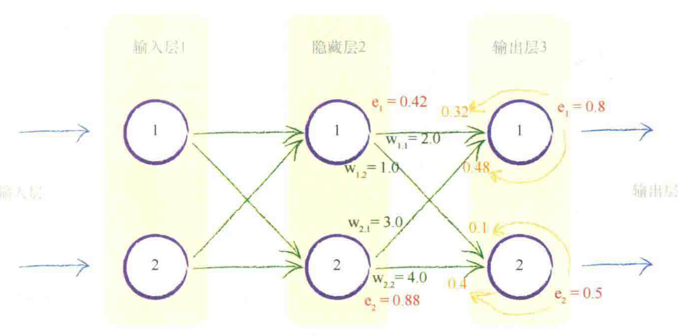
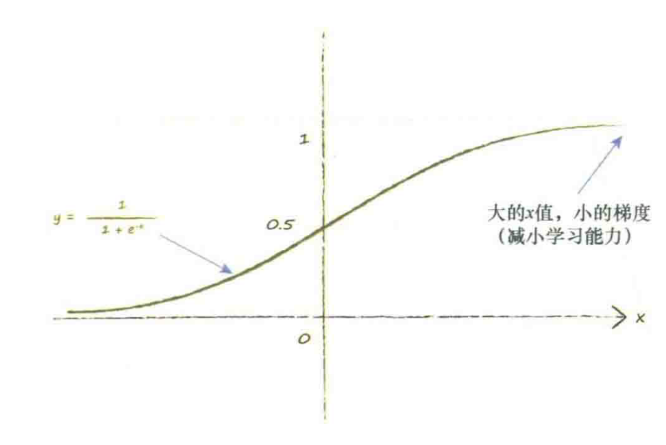
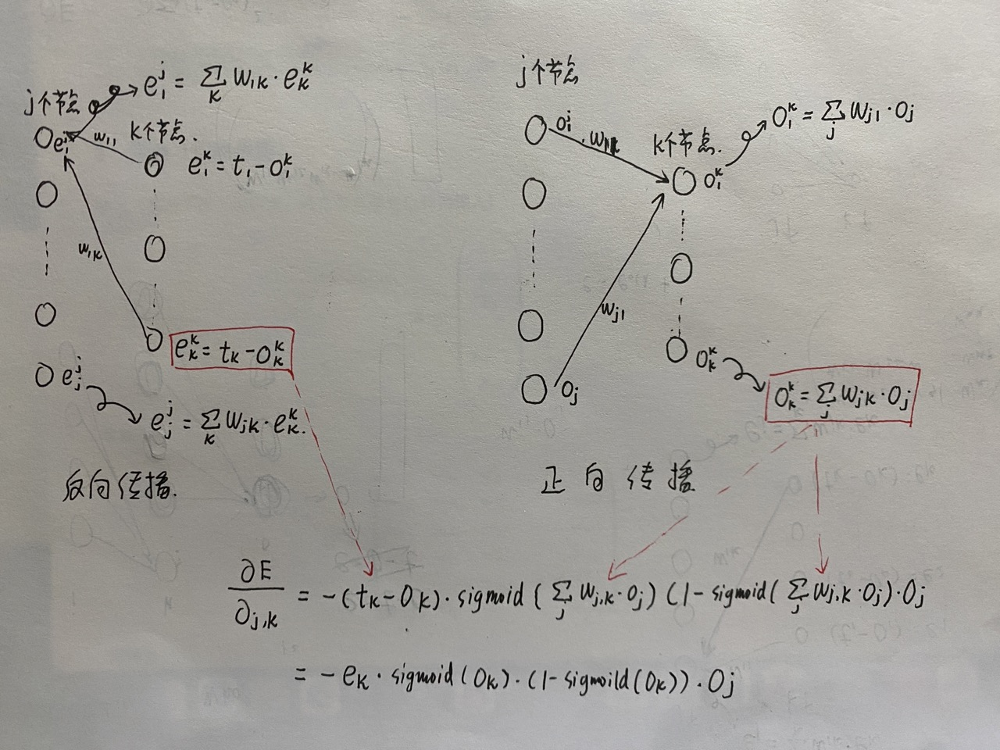

Python手搓神经网络
一个最普通的神经网络搭建大致可以分为以下几个部分：
一、输入的正向传播
二、误差的反向传播
三、误差函数的选择
四、使误差函数的值最小化
五、准备数据
一、输入的正向传播
1、网络输入
在实际中，网络输入的数据种类繁多。按照维度主要有一维、二维（灰度图）、三维（RGB图片）。 同时为了充分利用计算机性能，每次进入网络训练的数据不止一组，而是一批（batch）。
2、正向传播
单个神经元向前传播的原理如下：
{kind=link}
二、误差的反向传播
{kind=link}
三、误差函数的选择
神经网络的输出是一个极其复杂困难的函数，这个函数具有许多参数影响到其输出的链接权重。 神经网络本身的输出函数不是一个误差函数。但由于误差是目标训练值与实际输出值之间的差值， 因此我们可以很容易地把输出函数变成误差函数。
误差函数的选择有很多，最简单的三种包括：\(目标值-实际值\)、\(|目标值-实际值|\)、 \({|目标值-实际值|}^{2}\)
四、使误差函数的值最小化
定义误差函数的梯度：
选择平方误差，则：
其中 \(n\) 表示输出节点个数， \(t_n\) 表示目标输出值， \(o_n\) 表示实际输出值。
注意，在节点 \(n\) 的输出 \(o\) ，只取决于连接到这个节点的链接， 因此我们可以直接简化这个表达式。这意味着，由于这些权重是链接到节点 \(k\) 的权重， 因此节点 \(k\) 的输出 \(o_k\) 只取决于权重 \({\omega}_{j,k}\) 。 换句话说，节点 \(k\) 的输出不依赖于权重 \({\omega}_{j,b}\) ， 由于 \(b\) 和 \(k\) 之间没有链接，因此 \(b\) 和 \(k\) 无关联。 权重 \({\omega}_{j,b}\) 是连接输出节点b的链接权重，而不是输出节点k的链接权重。 这意味着，除了权重 \({\omega}_{j,k}\) 所链接的节点（也就是 \(o_k\) ）外， 我们可以从和中删除所有的 \(o_n\) ，得到：
根据链式法则，又有：
针对第二项，如果选择sigmoid激活函数，则：
其中 \(o_j\) 是前一层的输出，则：
\(\sum_j{\omega}_{j,k}\times o_j\) 即为 \(o_k\) ,最后一项很容易得到结果为 \(o_j\) ，因此上式化简为：
权重改变的方向与梯度相反（斜率为负说明需要增加权重的值），因此得到权重更新的公式：
五、准备数据
1、输入
以sigmoid函数为例，可以发现如果输入变大，激活函数将会变得非常平坦。
{kind=link}
由于我们使用梯度学习新的权重，因此一个平坦的激活函数会出问题。 权重的改变取决于激活函数的梯度，小梯度意味着限制神经网络学习的能力， 这就是所谓的饱和神经网络。这告诉我们应该尽量保持小的输入。
同时，我们也不应该让输入信号太小。当计算机处理非常小或非常大的数字时，可能会丧失精度， 因此，使用非常小的值也会出现问题。 一个好的建议是重新调整输入值，将其范围控制在0.0到1.0。输入0会将 \(o_j\) 设置为0，这样权重更新表达式就会等于0，从而造成学习能力的丧失， 因此在某些情况下可以将此输入加上一个小小的偏移，如0.01，避免输入0带来麻烦。
2、输出
神经网络的输出是最后一层节点输出的信号。 如果我们使用的激活函数不能生成大于1的值，那么尝试将训练目标值设置为比较大的值就有点愚蠢了。 如果我们将目标值设置在这些不可能达到的范围，训练网络将会驱使更大的权重，以获得越来越大的输出， 而这些输出实际上是不可能由激活函数生成的。这使得网络饱和，因此我们知道这种情况是很糟糕的。 应该重新调整目标值，匹配激活函数的可能输出，注意避开激活函数不可能达到的值。 虽然，常见的使用范围为0.0～1.0，但是由于0.0和1.0这两个数也不可能是目标值，并且有驱动产生过大的权重的风险，因此一些人也使用0.01 ～0.99的范围。
3、随机初始权重
与输入和输出一样，同样的道理也适用于初始权重的设置。由于大的初始权重会造成大的信号传递给激活函数， 导致网络饱和，从而降低网络学习到更好的权重的能力，因此应该避免大的初始权重值。 我们可以从一1.0～+1.0之间随机均匀地选择初始权重。比起使用非常大的范围，比如说-1000～+1000， 这是一个好得多的思路。
对于给定特定形状的网络以及特定的激活函数，数学家和计算机科学家曾进行过数学计算， 制定出了经验法则，设置了随机初始权重。数学家所得到的经验规则是： 在一个节点传入链接数量平方根倒数的大致范围内随机采样，初始化权重。 因此，如果每个节点具有3条传入链接，那么初始权重的范围应该在从 \(-1/ \sqrt{3}\) 到 \(+1/\sqrt{3}\) ，即士0.577之间。 如果每个节点具有100条传入链接，那么权重的范围应该在 \(-1/ \sqrt{100}\) 到 \(+1/\sqrt{100}\) ，即士0.1之间。 直觉上说，这是有意义的。一些过大的初始权重将会在偏置方向上偏置激活函数，非常大的权重将会使激活函数饱和。 一个节点的传入链接越多，就有越多的信号被叠加在一起。因此，如果链接更多，那么减小权重的范围，这个经验法则是有道理的。 从概率分布中进行采样的思想，那么这一经验法则实际上讲的是从均值为0、标准方差等于节点传入链接数量平方根倒数的正态分布中进行采样。
六、使用Python实现神经网络
一个基本的神经网络应当具有三种功能：初始化函数、训练、查询。
import numpy as np
import scipy.special # 导入sigmoid函数
class Neural_Network:
# 初始化网络
def __init__(self, ...):
....
pass
# 网络训练（计算输出、与实际输出对比指导网络权重更新）
def train(self, ...):
....
pass
# 计算输出
def query(self, ...):
....
pass
假定神经网络一共有3层，每层的节点数量可变。
1、初始化函数
从初始化网络开始，我们需要设置输入层节点、隐藏层节点和输出层节点的数量。 这些节点数量定义了神经网络的形状和尺寸。这些数量并不固定，而是当我们使用参数创建一个新的神经网络对象时，才会确定这些数量。
def __init__(self, input_nodes, hidden_nodes, output_nodes, learning_rate):
# set number of nodes in each input, hidden, output layer
self.inodes = input_nodes # 输入层
self.hnodes = hidden_nodes # 隐藏层
self.onodes = output_nodes # 输出层
self.lr = learning_rate # 学习率
# 简单生成初始化权重矩阵（-0.5到+0.5）
self.s_wih = (np.random.rand(self.hnodes, self.inodes) - 0.5)
self.s_who = (np.random.rand(self.onodes, self.hnodes) - 0.5)
# 简单生成初始化权重矩阵
self.wih = np.random.normal(0.0, pow(self.hnodes, -0.5), (self.hnodes, self.inodes))
self.who = np.random.normal(0.0, pow(self.onodes, -0.5), (self.onodes, self.hnodes))
# 激活函数确定为sigmoid函数
self.activation_function = lambda x: scipy.special.expit(x) # 使用lambda创建函数
pass
2、查询（正向传播）
输入（相对于后一层而言，进入节点都可以称为输入）
权重矩阵
则输出
备注
输入 \(X\) 既可以是行向量也可以是列向量，区别在于矩阵相乘的顺序（WX或XW）和权重矩阵的排列不同。
def query(self, inputs_list):
# 将列表输入变成数组
inputs = np.array(inputs_list, ndmin=2).T
# 输入层到隐藏层
hidden_inputs = np.dot(self.wih, inputs)
# 隐藏层通过激活函数输出
hidden_outputs = self.activation_function(hidden_inputs)
# 隐藏层到输出层
final_inputs = np.dot(self.who, hidden_outputs)
# 输出层通过激活函数输出
final_outputs = self.activation_function(final_inputs)
return final_outputs
3、训练（误差反向传播）
{kind=link}
def train(self, inputs_list, targets_list):
# 将列表输入变成数组
inputs = np.array(inputs_list, ndmin=2).T
targets = np.array(targets_list, ndmin=2).T
# 计算进入隐藏层的输入
hidden_inputs = np.dot(self.wih, inputs)
# 激活函数计算隐藏层输出
hidden_outputs = self.activation_function(hidden_inputs)
# 计算进入输出层的输入
final_inputs = np.dot(self.who, hidden_outputs)
# 激活函数计算输出层输出
final_outputs = self.activation_function(final_inputs)
# 计算误差 e = target - actual
output_errors = targets - final_outputs
# 计算反向传播误差
hidden_errors = np.dot(self.who.T, output_errors)
# 更新隐藏层和输出层的权重
self.who += self.lr * np.dot((output_errors * final_outputs * (1.0 - final_outputs)), np.transpose(hidden_outputs))
# 更新输入层和隐藏层的权重
self.wih += self.lr * np.dot((hidden_errors * hidden_outputs * (1.0 - hidden_outputs)), np.transpose(inputs))
pass
4、实例：MINIST数据集
# load the mnist training data CSV file into a list
training_data_file = open(MINIST训练集数据路径, 'r')
training_data_list = training_data_file.readlines()
training_data_file.close()
# number of input, hidden and output nodes
input_nodes = 784
hidden_nodes = 200
output_nodes = 10
# learning rate
learning_rate = 0.1
# create instance of neural network
n = Neural_Network(input_nodes, hidden_nodes, output_nodes, learning_rate)
# train the neural network
epochs = 50
for e in range(epochs):
# go through all records in the training data set
print("Training..." + 'epochs:' + str(e))
for record in training_data_list:
# split the record by the ',' commas
all_values = record.split(',')
# scale and shift the inputs
inputs = (np.asfarray(all_values[1:]) / 255.0 * 0.99) + 0.01
# create the target output values (all 0.01, except the desired label which is 0.99)
targets = np.zeros(output_nodes) + 0.01
# all_values[0] is the target label for this record
targets[int(all_values[0])] = 0.99
n.train(inputs, targets)
pass
pass
# test the neural network
# scorecard for how well the network performs, initially empty
scorecard = []
# load the mnist test data CSV file into a list
test_data_file = open(MINIST测试集数据路径, 'r')
test_data_list = test_data_file.readlines()
test_data_file.close()
# go through all the records in the test data set
for record in test_data_list:
# split the record by the ',' commas
all_values = record.split(',')
# correct answer is first value
correct_label = int(all_values[0])
# scale and shift the inputs
inputs = (np.asfarray(all_values[1:]) / 255.0 * 0.99) + 0.01
# query the network
outputs = n.query(inputs)
# the index of the highest value corresponds to the label
label = np.argmax(outputs)
# append correct or incorrect to list
if label == correct_label:
# network's answer matches correct answer, add 1 to scorecard
scorecard.append(1)
else:
# network's answer doesn't match correct answer, add 0 to scorecard
scorecard.append(0)
pass
pass
# calculate the performance score, the fraction of correct answers
scorecard_array = np.asarray(scorecard)
print("performance = ", scorecard_array.sum() / scorecard_array.size)